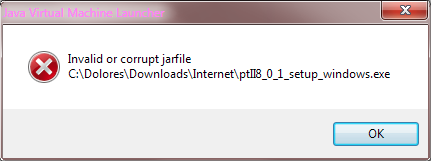

There are two common causes for hangs during the installation.
Due to shortcomings in Windows, the short cuts that invoke Ptolemy are 32-bit or 64-bit specific. If a 32-bit installer is installed on a 64-bit machine or a 64-bit installer is installed on a 32-bit machine, then creating the shortcuts will hang the installer.
The solution is to determine if you are running a 64-bit version of Windows, see See 32-bit or 64-bit for details, and then try the other installer.
Reference: http://stackoverflow.com/questions/11461899/izpack-desktop-shortcut-on-windows-not-working.
If you are logged in as a non-Administrator user, it might be necessary to run the installer as an Administrator by right clicking on the installer and select Run as Administrator
Problems have been reported with downloading the installers.
When downloading, you may get a message like:
The issues is that the download is not common, the workaround is to click on the "Actions" button and then "Run Anyway".
A Windows user reported this error window:

One possible work around is to download the .exe file and invoke the java command on the .exe file:
java -jar ptII11_0_1_setup_windows_64.exe
It looks like this error message is caused by a problem with the the .exe file that is produced by Launch4J. See http://stackoverflow.com/questions/5913120/java-embedding-jar-inside-exe for details.
See the Ptolemy II Nightly Build for snapshots and development releases.
To run the Windows Ptolemy II installer requires that Java be installed on your machine.
If Java is not installed when you run the Windows Ptolemy II installer, then you will be directed to install a Java Runtime Environment (JRE). This JRE is separate from the JRE that is included in the Windows Ptolemy II installer.
Under Windows, the Ptolemy II installer includes a private copy of the Java Runtime Environment (JRE). The private copy of the JRE includes Java packages that are used by various domains and actors.
d3d8.dll missing, then you probably need to install
DirectX.
http://www.microsoft.com/downloads/search.aspx?displaylang=en&categoryid=2To run Ptolemy II, the Java runtime environment (JRE) is sufficient.
To extend Ptolemy II with your own
Java code, the Java development kit (JDK)
or an equivalent Java development environment is required.
The JDK includes a Java compiler.
Ptolemy II 11.0.1 requires Java 1.8 or later
To determine which version of Java you have, run the command below to see whether you have Java installed, and whether it is the proper version:
java -version
If the command cannot be found, or the version that is printed is less than 1.8, you should install the plug-in, JRE 1.8, or JDK 1.8 or later or use download the installer that includes a private copy of the JRE.
http://www.oracle.com/technetwork/java/javase/downloads/index.html
Choose the JDK if you want to compile actorshttp://www.oracle.com/technetwork/java/javase/tech/index-jsp-138252.html
d3d8.dll missing, then you probably need to install
DirectX.
http://www.microsoft.com/downloads/search.aspx?displaylang=en&categoryid=2
It is best if you install Ptolemy II in a path that does not contain spaces.
C:\Ptolemy\ is recommended.
The Windows installer will optionally install the Ptolemy II source code.
To build from source either follow the Eclipse instructions or install cygwin
This page covers installing Ptolemy II via a traditional Windows Installer
Other formats include: